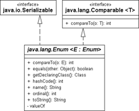

8.5 Die Spezial-Oberklasse Enum
Jedes Aufzählungsobjekt erbt von der Spezialklasse Enum. Nehmen wir erneut die Wochentage:
Listing 8.25: com/tutego/insel/enumeration/Weekday.java, Weekday
public enum Weekday
{
MONDAY, TUESDAY, WEDNESDAY, THURSDAY, FRIDAY, SATURDAY, SUNDAY
}
Der Compiler übersetzt dies in eine Klasse, die etwa so aussieht:
class Weekday extends Enum
{
public static final Weekday MONDAY = new Weekday( "MONDAY", 0 );
public static final Weekday TUESDAY = new Weekday( "TUESDAY ", 1 );
// weitere Konstanten ...
private Weekday( String s, int i )
{
super( s, i );
}
// weitere Methoden ...
}
8.5.1 Methoden auf Enum-Objekten
Jedes Enum-Objekt besitzt automatisch einige Standardmethoden, die von der Oberklasse java.lang.Enum kommen. Das sind zum einen überschriebene Methoden aus java.lang.Object, einige neue Objektmethoden und einige statische Methoden.
Abbildung 8.12: Typbeziehung von Enum
String-Repräsentation
Jedes Enum-Objekt liefert über die Methode name() den Namen der Konstante. Dazu gesellt sich die bekannte toString()-Methode, die standardmäßig name() aufruft, aber überschrieben werden kann. Die Methode name() lässt sich nicht überschreiben.
Eine vom Compiler generierte Enum-Klasse bietet eine statische valueOf(String)-Methode, die das Enum-Objekt liefert, das zur name()-Repräsentation passt. Wird bei valueOf() ein String übergeben, zu dem es kein Enum gibt, folgt eine IllegalArgumentException. Dazu kommt eine weitere statische Methode, die jedoch selbst schon in der Klasse Enum deklariert wird (die Basisklasse der vom Compiler erzeugten Enum-Klassen): Enum.valueOf(Class<T> enumType, String s).
| Beispiel |
|
Die Konvertierung in den String und vom String in das entsprechende Enum-Objekt: System.out.println( Weekday.MONDAY.toString() ); // MONDAY |
Der Unterschied zu den valueOf()-Methoden ist wichtig: Während es Enum.valueOf(Class, String) nur einmal gibt, existieren statische valueOf(String)-Methoden einmal in jeder vom Compiler generierten Aufzählungsklasse. Da die Methode also compilergeneriert ist, taucht sie in der folgenden Aufzählung nicht auf.
abstract class java.lang.Enum<E extends Enum<E>> |
- final String name()
Liefert den Namen der Konstanten. Da die Methode – wie viele andere der Klasse – final ist, lässt sich der Name nicht ändern. - String toString()
Liefert den Namen der Konstanten. Die Methode ruft standardisiert name() auf, weil sie aber nicht final ist, kann sie überschrieben werden. - static <T extends Enum<T>> T valueOf(Class<T> enumType, String s)
Ermöglicht das Suchen von Enum-Objekten zu einem Konstantennamen und einer Enum-Klasse. Sie liefert das Enum-Objekt für die gegebene Zeichenfolge oder löst eine IllegalArgumentException aus, wenn dem String kein Enum-Objekt zuzuordnen ist.
Alle Konstanten der Klasse aufzählen
Eine praktische statische Methode ist values(). Sie liefert ein Feld von Enum-Objekten. Nützlich ist das für das erweiterte for, das alle Konstanten aufzählen soll. Eine Alternative mit dem gleichen Ergebnis ist die Class-Methode getEnumConstants():
Listing 8.26: com/tutego/insel/enumeration/WeekdayDemo.java, Ausschnitt main()
for ( Weekday day : Weekday.values() ) // oder Weekday.class.getEnumConstants()
System.out.println( "Name=" + day.name() );
Liefert Zeilen mit Name=MONDAY, ...
Ordinalzahl
Von der Oberklasse Enum erbt jede Aufzählung einen geschützten parametrisierten Konstruktor, der den Namen der Konstanten sowie einen assoziierten Zähler erwartet. So wird aus jedem Element der Aufzählung ein Objekt vom Basistyp Enum, das einen Namen und eine ID, die sogenannte Ordinalzahl, speichert. Natürlich kann es auch nach seinem Namen und Zähler gefragt werden.
| Beispiel |
|
Eine Methode, die die Ordinalzahl eines Elements der Aufzählung liefert oder –1, wenn die Konstante nicht existiert: Listing 8.27: com/tutego/insel/enumeration/WeekdayDemo.java, getOrdinal() static int getOrdinal( String name ) |
Die Ordinalzahl gibt die Position in der Deklaration an und ist auch Ordnungskriterium der compareTo()-Methode. Die Ordinalzahl lässt sich nicht ändern und repräsentiert immer die Reihenfolge der deklarieren Konstanten.
| Beispiel |
|
Kommt Montag wirklich vor Freitag? System.out.println( Weekday.MONDAY.compareTo( Weekday.FRIDAY ) ); // –4 |
abstract class java.lang.Enum<E extends Enum<E>> |
- final int ordinal()
Liefert die zur Konstante gehörige ID. Im Allgemeinen ist diese Ordinalzahl nicht wichtig, aber besondere Datenstrukturen wie EnumSet oder EnumMap nutzen diese eindeutige ID. Die Reihenfolge der Zahlen ist durch die Reihenfolge der Angabe gegeben. - public final boolean equals(Object other)
Die Oberklasse Enum überschreibt equals() mit der Logik wie in Object – also den Vergleich der Referenzen –, um sie als final zu markieren. - protected final Object clone() throws CloneNotSupportedException
Die Methode clone() ist final protected und kann also weder überschrieben noch von außen aufgerufen werden. So kann es keine Kopien der Enum-Objekte geben, die die Identität gefährden könnten. Grundsätzlich ist es aber erlaubt, wenn eigene Implementierungen von clone() die this-Referenz liefern. - final int compareTo(E o)
Da die Enum-Klasse die Schnittstelle Comparable implementiert, gibt es auch die Methode compareTo(). Sie vergleicht anhand der Ordinalzahlen. Vergleiche sind nur innerhalb eines Enum-Typs erlaubt. - final Class<E> getDeclaringClass()
Liefert das Class-Objekt zu einem konkreten Enum.
| Hinweis |
|
Die Methode getDeclaringClass() liefert auf der Aufzählungsklasse selbst null und nur auf den Elementen der Aufzählung einen sinnvollen Wert: System.out.println( Weekday.class.getDeclaringClass() ); // null |
8.5.2 enum mit eigenen Konstruktoren und Methoden *
Da ein enum-Typ eine besondere Form der Klassendeklaration ist, kann er ebenso Attribute und Methoden deklarieren. Geben wir einer Aufzählung Country eine Methode, die den ISO-3166-2-Landescode des jeweiligen Aufzählungselements liefert:
Listing 8.28: com/tutego/insel/enumeration/Country.java, Country
public enum Country
{
GERMANY, UK, CHINA;
public String getISO3Country()
{
if ( this == GERMANY )
return Locale.GERMANY.getISO3Country();
else if ( this == UK )
return Locale.UK.getISO3Country();
return Locale.CHINA.getISO3Country();
}
}
Die Methode getISO3Country() kann nun auf den Enum-Objekten aufgerufen werden:
System.out.println( Country.CHINA.getISO3Country() ); // CHN
Da switch auf enum erlaubt ist, können wir Folgendes schreiben:
Listing 8.29: com/tutego/insel/enumeration/CountryEnumDemo.java, Ausschnitt
Country c = Country.GERMANY;
switch ( c )
{
case GERMANY:
System.out.println( "Aha. Ein Krauti" ); // Aha. Ein Krauti
System.out.println( c.getISO3Country() ); // DEU
break;
default: System.out.println( "Anderes Land" );
}
enum für Singleton nutzen
Ein Singleton ist ein Objekt, das es in der Applikation nur einmal gibt.[163](Pro Klassenlader, um das etwas genauer auszudrücken.) Javas enum ist dafür perfekt geeignet, denn die Aufzählungsobjekte gibt es in der Tat nur einmal, und die Bibliothek implementiert einige Tricks, um das Objekt auch möglichst nur einmal zu erzeugen, etwa dann wenn die Aufzählung serialisiert über die Leitung geht.
Ein Beispiel dazu. Ein enum MainFrame soll genau eine Konstante INSTANCE deklarieren. Da enum-Typen Attribute deklarieren können, soll unser MainFrame eine Objektvariable JFrame bekommen. Das bedeutet dann, dass mit dem Exemplar INSTANCE ein Swing-Fenster assoziiert ist. Das es nur ein Aufzählungselement in der enum gibt, kann auch nur ein JFrame-Exemplar gebildet werden:
Listing 8.30: com/tutego/insel/enumeration/MainFrame.java, MainFrame
public enum MainFrame
{
INSTANCE;
private JFrame f = new JFrame();
public JFrame getFrame()
{
return f;
}
}
Damit ist INSTANCE ein Exemplar vom Typ MainFrame und hat ein privates Attribut und eine öffentliche Zugriffsmethode. Da es nur eine Konstante gibt, gibt es auch nur ein Fenster. Eine Anwendung sieht etwa so aus:
Listing 8.31: com/tutego/insel/enumeration/MainFrameDemo.java, main()
MainFrame.INSTANCE.getFrame().setTitle( "Singleton" );
MainFrame.INSTANCE.getFrame().setBounds( 100, 100, 300, 400 );
MainFrame.INSTANCE.getFrame().setVisible( true );
Aus jedem Teil der Anwendung ist MainFrame.INSTANCE zugänglich und repräsentiert dieses eine Exemplar. Auch kann dieses Exemplar übergeben werden, weil es ein Objekt ist, wie jedes andere auch.
enum mit Konstruktoren
Neben dieser Variante wollen wir eine zweite Implementierung nutzen und nun Konstruktoren hinzuziehen, um das gleiche Problem auf andere Weise zu lösen:
Listing 8.32: com/tutego/insel/enumeration/Country.java, Country
public enum Country
{
GERMANY( Locale.GERMANY ),
UK( Locale.UK ),
CHINA( Locale.CHINA );
private Locale country;
private Country( Locale country )
{
this.country = country;
}
public String getISO3Country()
{
return country.getISO3Country();
}
}
Bei der Deklaration der Konstanten wird in runden Klammern ein Argument für den Konstruktor übergeben. Der Konstruktor speichert das zugehörige Locale-Objekt in der internen Variablen country, auf die dann getISO3Country() Bezug nimmt.
enum mit überschriebenen Methoden
In dem Enum-Typ lassen sich nicht nur Methoden hinzufügen, sondern auch Methoden überschreiben. Beginnen wir mit einer lokalisierten und überladenen Methode toString():
Listing 8.33: com/tutego/insel/enumeration/WeekdayInternational.java, WeekdayInternational
public enum WeekdayInternational
{
SUNDAY, MONDAY, TUESDAY, WEDNESDAY, THURSDAY, FRIDAY, SATURDAY;
@Override
public String toString()
{
return new SimpleDateFormat().getDateFormatSymbols()
.getWeekdays()[ ordinal() + 1 ];
}
public String toString( Locale l )
{
return new SimpleDateFormat( "", l ).getDateFormatSymbols()
.getWeekdays()[ ordinal() + 1 ];
}
}
Die erste Methode ist aus unserer Oberklasse Object überschrieben, die zweite als überladene Methode hinzugefügt. Ein Beispiel macht den Aufruf und die Funktionsweise klar:
Listing 8.34: com/tutego/insel/enumeration/WeekdayInternationalDemo.java, main()
System.out.println( WeekdayInternational.SATURDAY ); // Samstag
System.out.println( WeekdayInternational.SATURDAY.toString() ); // Samstag
System.out.println( WeekdayInternational.SATURDAY.toString(Locale.FRANCE) ); // samedi
System.out.println( WeekdayInternational.SATURDAY.toString(Locale.ITALY) ); // sabato
An dieser Stelle hören die Möglichkeiten der enum-Syntax aber noch nicht auf. Ähnlich wie die Syntax von inneren anonymen Klassen, die es erlauben, Methoden zu überschreiben, bieten Aufzählungstypen eine vergleichbare Syntax, um gezielt Methoden für eine spezielle Konstante zu überschreiben.
Nehmen wir an, in einem Spiel gibt es eine eigene Währung, den Ponro-Dollar. Nun soll dieser aber mit einer Referenzwährung, dem Euro, in Beziehung gesetzt werden; der Wechselkurs ist einfach 1:2:
Listing 8.35: com/tutego/insel/enumeration/GameCurrency.java, GameCurrency
public enum GameCurrency
{
EURO() {
@Override double convertTo( GameCurrency targetCurrency, double value )
{
return targetCurrency == EURO ? value : value / 2;
}
},
PONRODOLLAR() {
@Override double convertTo( GameCurrency targetCurrency, double value )
{
return targetCurrency == PONRODOLLAR ? value : value * 2;
}
};
abstract double convertTo( GameCurrency targetCurrency, double value );
}
Der interessante Teil ist die Deklaration der abstrakten convertTo()-Methode und die Implementierung lokal bei den einzelnen Konstanten. (Natürlich müssen wir nicht jede Methode im enum abstrakt machen, sondern sie kann auch konkret sein. Dann muss nicht jedes enum-Element die abstrakte Methode implementieren.)
Mit einem statischen Import für die Aufzählung lässt sich die Nutzung und Funktionalität schnell zeigen:
Listing 8.36: com/tutego/insel/enumeration/GameCurrencyDemo.java, main()
System.out.println( EURO.convertTo( EURO, 12 ) ); // 12.0
System.out.println( EURO.convertTo( PONRODOLLAR, 12 ) ); // 6.0
System.out.println( PONRODOLLAR.convertTo( EURO, 12 ) ); // 24.0
System.out.println( PONRODOLLAR.convertTo( PONRODOLLAR, 12 ) ); // 12.0
enum kann Schnittstellen implementieren
Die API-Dokumentation von Enum zeigt an, dass die abstrakte Klasse zwei Schnittstellen implementiert: Comparable und Serializable. Jede in enum deklarierte Konstante ist Unterklasse von Enums, also immer vergleichbar und standardmäßig serialisierbar. Neben diesen Standardschnittstellen kann ein enum andere Schnittstellen implementieren. Das ist sehr nützlich, denn so schreibt es für alle Aufzählungselemente ein bestimmtes Verhalten vor – jedes Aufzählungselement bietet dann diese Operationen. Die Operationen der Schnittstelle können auf zwei Arten realisiert werden: Das enum selbst implementiert die Operationen der Schnittstelle im Rumpf, oder die einzelnen Aufzählungselemente realisieren die Implementierungen jeweils unterschiedlich. Oftmals dürfte es so sein, dass die Elemente unterschiedliche Implementierungen bereitstellen.
Unser nächstes kleines Beispiel für eine enum DefaultIcons implementiert die Schnittstelle Icon für grafische Symbole. Da die Symbole alle die gleichen Ausmaße haben, ist die Icon-Operation getIconWidth() und getIconHeight() immer gleich und wird nur einmal implementiert; die tatsächlichen paintIcon()-Implementierungen (die hier nur angedeutet werden) unterscheiden sich.
Listing 8.37: com/tutego/insel/enumeration/DefaultIcons.java, DefaultIcons
public enum DefaultIcons implements Icon
{
WARNING {
@Override public void paintIcon( Component c, Graphics g, int x, int y )
{
// g.drawXXX()
} },
ERROR {
@Override public void paintIcon( Component c, Graphics g, int x, int y )
{
// g.drawXXX()
} };
@Override public int getIconWidth() { return 16; }
@Override public int getIconHeight() { return 16; }
}
Der Zugriff DefaultIcons.ERROR gibt ein Objekt, das unter anderem vom Typ Icon ist und an allen Stellen übergeben werden kann, an denen ein Icon gewünscht ist.
Ihr Kommentar
Wie hat Ihnen das <openbook> gefallen? Wir freuen uns immer über Ihre freundlichen und kritischen Rückmeldungen.
 Jetzt bestellen
Jetzt bestellen


{kind=link}